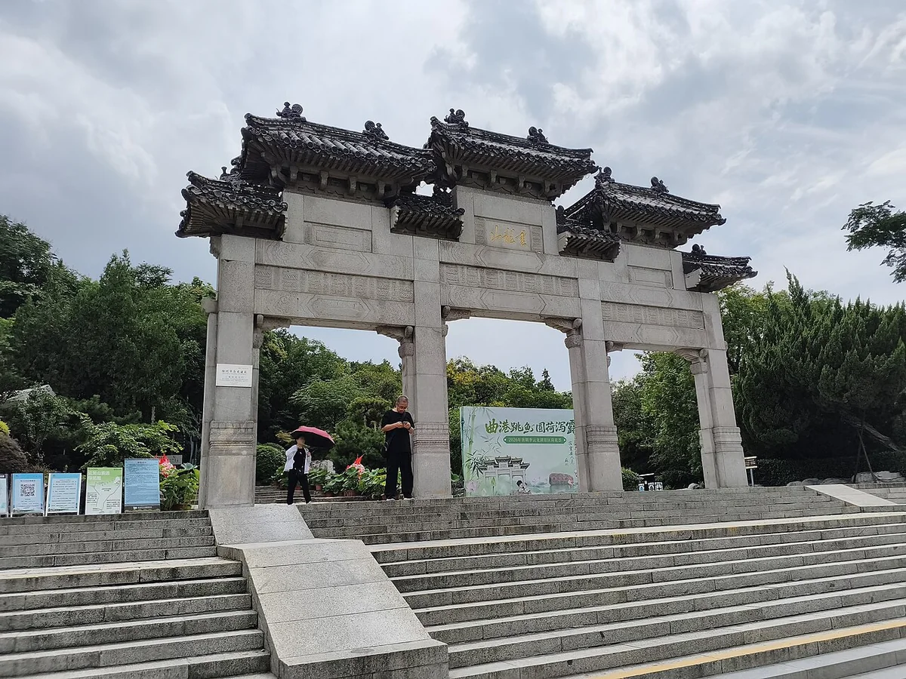

徐州 · 云龙山 / 2026.10.27
云龙山从北魏石佛，走到苏轼的徐州
北麓登山，串起石窟、古亭与碑刻；在第三节山读懂云龙湖和徐州的水城变迁。

徐州先听历史，把眼前的风景放回时间里。
北魏造像、北宋交游、明清重修和近代治水，构成云龙山的四层历史。
01 —
点选景点，开启讲解地图上的历史
水域 语音景点
北向上。云龙山由东北向西南延伸，云龙湖在西侧；第一节山古迹群为阅读放大，非等比例导航图。观景台单独位于更南面的第三节山。 AI 合成语音 · 实际通行及开放以现场为准。
行
这一路，按历史线索串联。
徐州博物馆 → 北门 → 兴化寺 → 碑廊 → 放鹤亭 → 饮鹤泉 → 第三节山观景台 → 按现场指引向西接云龙湖。寺院与石窟保护室以现场开放情况为准。
02 —
人物 · 年代 · 城市放回历史的坐标
北魏—北宋
依山凿佛，唐宋持续增刻佛龛与题记。
1078
张天骥建放鹤亭，苏轼作《放鹤亭记》。
明清
寺殿、亭屋屡次重修，碑刻积累为地方史料。
1958—1980
云龙湖水利建设、碑廊扩建与北山门重建。
03 —
已听 0 / 6